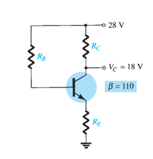

Fixed Bias BJT Circuit
Common Emitter Configuration · Base Bias Method
FIGURE · Fixed Bias Circuit

Figure: Fixed Bias Circuit with R
B
, R
C
, and V
CC
= 28V
Input/Output Waveforms
180° Phase Shift
Input Signal (V
in
)
Output Signal (V
out
)
Fixed Parameters
V
CC
28 V
R
C
4.7 kΩ
Interactive Analysis
Control Panel
Current Gain
β
110
Base Resistor
R
B
200 kΩ
Base-Emitter
V
BE
0.70 V
Reset to Default
Calculated Values
Step-by-Step Solution